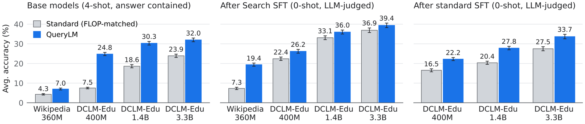

Choose when and what to search.
An annotator identifies insertion points and writes each query using only the preceding text.
Search-Native Pretraining
Language models that learn to search
during pretraining.
We add search calls and retrieved evidence to ordinary training documents. The resulting models, QueryLM, learn to find and use information as they learn to predict text.
The idea
Many facts in a training corpus must be memorized. That is a particular constraint for smaller models, and knowledge stored in weights is difficult to keep up to date.
Search gives a model another way to access that information. We teach this ability during pretraining by inserting useful search calls into the documents it already learns from.
Method
Queries and evidence are inserted where they help predict the original continuation. Explore what changes in this simplified example from the paper.
At Racetrack Playa, stones leave trails stretching over 100 meters, propelled by wind-driven, millimeter-thin ice.
Racetrack Playa stone propelled by
Thin ice sheets pushed by light winds move the stones…
wind-driven, millimeter-thin ice.
An annotator identifies insertion points and writes each query using only the preceding text.
A local BM25 index retrieves web passages. Responses are compressed and filtered for relevance to the continuation.
Training supervises document text and queries. Retrieved responses provide context, but are masked from the loss.

What we find
We compare QueryLM with standard models trained on the same documents without search augmentation, with pretraining compute matched.
QueryLM performs better on knowledge-intensive question answering. The advantage remains after both models receive supervised fine-tuning (SFT), including fine-tuning with search.
The tested post-training recipes narrow the gap, but do not fully recover the benefit of search during pretraining.


We supply evidence that supports either an original fact or a plausible counterfactual. QueryLM more readily adjusts its predictions to the supplied evidence.
This measures responsiveness to context. Following counterfactual evidence is not the same as improving factual accuracy.


General capabilities
Base QueryLM is slightly below the baseline on general benchmarks. After search fine-tuning, the models are broadly comparable, with mixed results across tasks.
Training cost
Shorter responses and fewer search blocks reduce training overhead while retaining useful search ability. The ablations examine this performance–cost trade-off.
Build on this work
Explore QueryLM and its compute-matched baselines, together with the augmented corpora and search annotator.
Wikipedia and DCLM-Edu models, from 360M to 3.3B parameters. Base and search fine-tuned checkpoints are paired with their Standard baselines.
Browse the model collectionDocuments with inline search queries and evidence, plus the search fine-tuning conversations.
The Gemma 4 E4B LoRA adapter used to identify search insertion points and write queries.
Get the annotator| Corpus | Size | Stage | QueryLM | Standard baseline |
|---|---|---|---|---|
| Wikipedia | 360M | Base | querylm-wiki-360m | standard-wiki-360m |
| Wikipedia | 360M | Search SFT | querylm-wiki-360m-sft-search | standard-wiki-360m-sft-search |
| DCLM-Edu | 400M | Base | querylm-dclm-400m | standard-dclm-400m |
| DCLM-Edu | 400M | Search SFT | querylm-dclm-400m-sft-search | standard-dclm-400m-sft-search |
| DCLM-Edu | 1.4B | Base | querylm-dclm-1.4b | standard-dclm-1.4b |
| DCLM-Edu | 1.4B | Search SFT | querylm-dclm-1.4b-sft-search | standard-dclm-1.4b-sft-search |
| DCLM-Edu | 3.3B | Base | querylm-dclm-3.3b | standard-dclm-3.3b |
| DCLM-Edu | 3.3B | Search SFT | querylm-dclm-3.3b-sft-search | standard-dclm-3.3b-sft-search |
Reference
Provisional BibTeX.
The official citation will follow publication.
@misc{ponkshe2026searchfromthestart,
title = {Search From the Start: Search-Native Pretraining for Language Models},
author = {Ponkshe, Kaustubh and Je, Gyung Hyun and Taga, Stefan and Raffel, Colin and Jaggi, Martin},
year = {2026},
note = {Placeholder entry; to be replaced by the official citation}
}